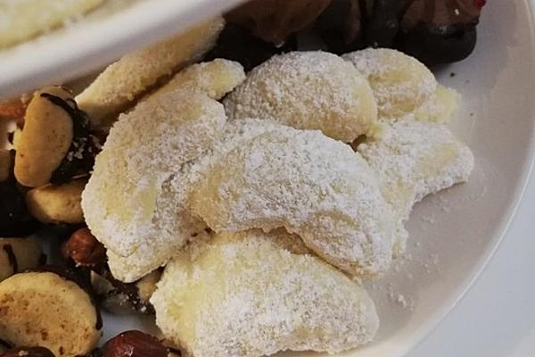

Vanillekipferl meiner Oma
Zutaten für 4 Portionen
- 300 g Mehl
- 250 g Butter
- 100 g Puderzucker / Staubzucker
- 100 g Mandel(n), geschälte und geriebene
- 100 g Puderzucker / Staubzucker
- 4 Pck. Vanillezucker
Zubereitung
Arbeitszeit ca. 40 Minuten Ruhezeit ca. 1 Stunde Gesamtzeit ca. 1 Stunde 40 Minuten
Aus Mehl, Butter, 100g Staubzucker und Mandeln einen Mürbeteig bereiten. 1 Stunde in den Kühlschrank stellen.
Den Teig dann zu dünnen Stangen rollen.
In kurze Stücke schneiden und aus diesen kleine Kipferl formen.
Auf nicht befettetem Blech (Backpapier benutzen) bei 180° Umluft - ca. 8 Minuten ganz hell backen.
Noch heiß vom Blech nehmen und sofort in 100g Staub- und 4 Pck. Vanillezucker, gut vermischt, vorsichtig wenden.
Ergibt ca. 4 Bleche.
Rezept von: dreamsnail Rezept